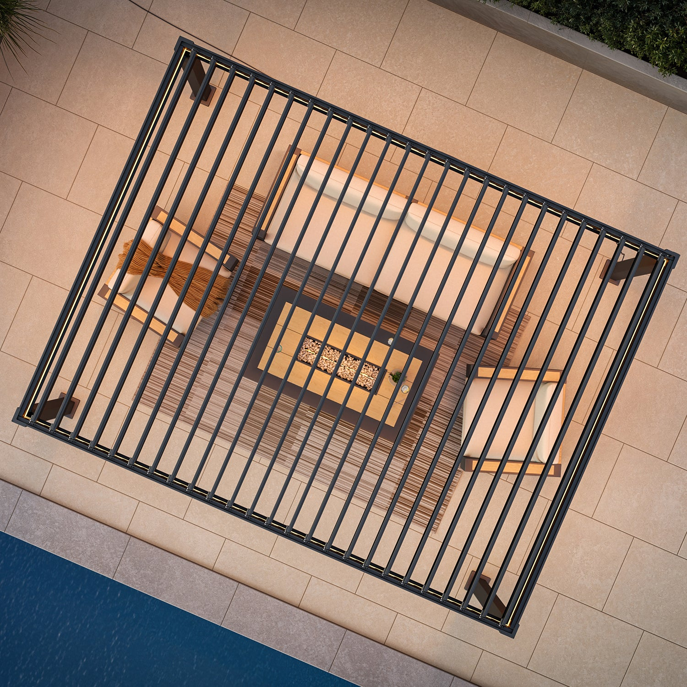

Mirador pergola on a client install in Raleigh, NC. Looks great on day one. The question is what it looks like on day 548.
Mirador makes a good-looking pergola that photographs well and won a Red Dot Design Award. The Takasho wood grain finish is genuinely attractive. But once you start digging into the engineering, things get thin. A 70 mph wind rating barely handles a strong summer thunderstorm in the Carolinas. The mixed metals (aluminum frame, galvanized steel louvers) concern me for long-term durability in humid climates. And a 4-year warranty on an outdoor structure? That's a yellow flag. I went back to check on my install after 18 months and found rust forming on the louver pivots. That's what you need to know before you buy.
How I Ended Up Installing a Mirador
A client in Raleigh found Mirador at a home show and fell in love with the look. I get it. The showroom display was sharp, the wood grain finish looked like real cedar, and the price was right at around $3,000 for a 10x13. She asked me to install it and I said sure, let me take a look at the specs first.
That's when things started to nag at me. But I'll come back to the specs in a moment. First, let me give Mirador credit for something that a lot of online-only brands can not match.
What Mirador Gets Right (and They Do Get Some Things Right)
I believe in being fair, even in a critical review. And Mirador is not all bad. Here is what they do well.
The Takasho wood grain finish genuinely looks like real wood without the maintenance headaches. No staining every two years. No rot. No termites. It won a Red Dot Design Award, and I can see why. The aesthetics are the best part of this product by a wide margin.
The integrated drainage system works well. Water routes down through the columns cleanly without pooling. Assembly was faster than most competitors, about 2 hours with my crew. And the retail availability is a real advantage. You can walk into Lowe's, Home Depot, or Costco and see one in person. Touch the finish. Inspect the louvers. For homeowners who want to see before they buy, that matters.
The Sorara brand (Mirador's parent) has been around since before some of these newer brands existed. They have distribution figured out. They have retail partnerships. Their entry pricing at $2,399 makes it genuinely accessible.
Now let me tell you why I still rated this a 2 out of 5. Because the things Mirador gets wrong are the things that matter most for long-term durability. And durability is what separates a real outdoor structure from expensive yard decoration.
What 70 MPH Wind Actually Means (Hint: Not Much)
Let me put Mirador's 70 mph wind rating in real-world context, because the number alone does not tell the full story.
A Category 1 hurricane starts at 74 mph. That means Mirador's pergola is rated below the weakest hurricane classification. But forget hurricanes for a moment. Let's talk about regular weather.
A strong summer thunderstorm with straight-line winds can hit 60-70 mph across the Southeast. The National Weather Service issues severe thunderstorm warnings at 58 mph. That means a severe thunderstorm, the kind that happens multiple times every summer in the Carolinas, can approach or exceed Mirador's rated capacity.
Here is what that looks like in practice. In June 2025, a derecho event pushed 75-85 mph winds across central North Carolina. In August 2024, Tropical Storm Debby brought 60-70 mph gusts well inland. These are not rare events. They happen every single year somewhere in the Southeast.
When your pergola is rated at exactly 70 mph, you have zero margin. You are hoping that every storm stays just under the limit. Smart homeowners do not hope. They buy margin.
"I installed a Mirador for a client in Wake Forest. First big thunderstorm, she called me panicking because the louvers were making sounds she had never heard from any outdoor structure. Nothing broke that time. But 'nothing broke this time' is not the same thing as 'built for this.' I started recommending the Hanso Horizon after that call."
The difference between 70 mph and 165 mph is not just a number on a spec sheet. It is the difference between a structure that might survive your local weather and one that is engineered to handle the worst weather the continental United States can throw at it. That is 135% more wind capacity. For roughly $2,500-3,000 more than a comparable Mirador with the E-MOTION motorized upgrade.
Want a pergola that handles real weather? The Hanso Horizon is rated for 165 mph winds, engineered to IBC 2024 standards, and validated with SAP2000 finite element analysis. All-aluminum construction with stainless steel fasteners. No mixed metals, no corrosion risk.
Check out the Hanso Horizon →The Mixed Metal Problem: A Science Lesson That Could Save You Thousands
Here is something a lot of buyers miss, and it is arguably the most serious engineering concern with the Mirador line.
Mirador uses an aluminum frame but galvanized steel louvers. That is two different metals in direct contact. In metallurgy, this is called galvanic corrosion. It is not a theory. It is not a maybe. It is basic electrochemistry that has been understood for over 200 years.
Here is how it works. When two dissimilar metals touch each other in the presence of an electrolyte (moisture, salt spray, humidity, even morning dew), they form a tiny battery. One metal becomes the anode and corrodes faster. The other becomes the cathode and is protected. In the aluminum-steel pairing, the aluminum typically corrodes faster at the contact points, while the steel develops surface rust as its galvanized coating breaks down.
The galvanic series ranks metals by their electrode potential. Aluminum and steel are far enough apart on this scale that the reaction is significant, especially in humid or coastal environments. This is the same reason you never bolt a copper fitting directly to a galvanized pipe. Every plumber knows this. Every marine engineer knows this. Every aircraft mechanic knows this.
So why would a pergola manufacturer mix aluminum and steel? Simple. Galvanized steel louvers are cheaper than aluminum louvers. It saves money at the factory. The corrosion does not show up during the warranty period if the warranty is only 4 years. By the time the customer sees rust on the pivots, the warranty is expired.
What I Found at 18 Months
I went back to check on that Raleigh install about 18 months after we put it up. The frame looked fine. The Takasho finish was holding up well. But I noticed rust starting to form on several of the louver pivots where the steel meets the aluminum hardware. Brown streaks running down from the pivot points.
It was not catastrophic. Not yet. But it was there. On an 18-month-old structure that cost over $3,000, that is not something I want to see. And here is the part that concerns me most: galvanic corrosion accelerates over time. It does not stay at the same rate. As the protective coatings wear through, the exposed metals react faster. Year three will be worse than year two. Year five will be worse than year three.
Compare that to an all-aluminum pergola like the Hanso Horizon, where every component, the frame, the louvers, the beams, is the same 6063-T6 aluminum alloy. No galvanic reaction. No rust potential. The only steel in the entire structure is the SUS304 stainless steel fasteners, which are specifically chosen because stainless steel is close enough to aluminum on the galvanic series that the reaction is negligible.
The 93-Degree Louver Range: Why It Matters More Than You Think
Mirador's louvers adjust from 0 to 93 degrees. That sounds like a reasonable range until you compare it to what competitors offer. The Hanso Horizon offers full rotation. Pergolux goes to 130 degrees. StruXure leads the market at 170 degrees.
Why does this matter? Because louver angle controls how much light, air, and rain gets through. At 93 degrees, you can go from fully closed to just past vertical. You can not angle the louvers back far enough to let full sunlight through on a cool morning or create the kind of dappled light patterns that make a pergola feel like a high-end outdoor room.
It is the difference between "open" and "closed" versus true adjustability. And for a product being sold as a louvered pergola, the louver range is kind of the whole point.
The Warranty Tells the Real Story
I always tell clients to look at the warranty as the manufacturer's confidence in their own product. It is the one place a company can not bluff. They have to back it up with real money.
Mirador offers 4 years. Let me put that in context.
| Brand | Structural Warranty | What It Tells You |
|---|---|---|
| PurpleLeaf | 1 year | They expect problems fast |
| Mirador | 4 years | Short-term confidence only |
| Pergolux | 10 / 5 / 2 yr split | Decent, with caveats |
| Hanso | 10 years | Long-term confidence |
| The Luxury Pergola | Lifetime, transferable | Total confidence |
| StruXure | Lifetime | Total confidence |
When a company backs their pergola for 4 years and a competitor backs theirs for 10, that is the company telling you how long they expect their product to hold up. Listen to what the warranty is saying.
And remember the galvanic corrosion timeline. I saw rust at 18 months. At 4 years, when that warranty expires, the corrosion will be well established. By year 6 or 7, you may be looking at louver replacement costs that approach what you paid for the whole pergola.
Looking for something backed by a real warranty? The Hanso Horizon comes with a 10-year structural warranty AND a separate 10-year AkzoNobel coating warranty. That is 20 years of combined coverage because they are confident it will last 35+.
See the Hanso Horizon warranty →The Ownership Behind the Brand
One more thing worth knowing. Mirador's parent brand Sorara is backed by Hengfeng Information Technology, a publicly traded Chinese company. That is not automatically a bad thing. Plenty of good products come from large international companies.
But it does mean the brand decisions are being made by a conglomerate focused on quarterly earnings, not by pergola engineers focused on durability. When cost-cutting happens at these companies, it shows up in thinner materials, shorter warranties, and cheaper component choices. Like using galvanized steel louvers instead of aluminum ones.
I have seen this pattern play out with other outdoor brands that are subsidiaries of larger companies. The product starts strong, gets positive early reviews, and then the bean counters start trimming. Wall thickness drops by 0.2mm here. A cheaper coating process there. The retail price stays the same. The product quality quietly declines.
The Real Cost Comparison: Think Long-Term
Mirador starts at $2,399. The Hanso Horizon starts at $5,900. On the surface, that is $3,500 more. But let me show you what that $3,500 actually buys you.
A Mirador with a 4-year warranty and visible rust at 18 months might last 5-8 years before the galvanic corrosion, thin materials, and low wind tolerance force a replacement. Let's be generous and say 7 years. That is $343 per year of use.
The Hanso Horizon, with its all-aluminum construction, T6 grade, 10-year warranty, and 35+ year expected lifespan, works out to $169 per year. Less than half the annual cost. And you never have to worry about corrosion, because there is no mixed-metal reaction to worry about.
Smart homeowners think in cost-per-year, not sticker price. The "cheap" option often turns out to be the most expensive one over time.
What I Like
- Takasho wood grain finish looks genuinely beautiful
- Red Dot Design Award winner
- Available at Lowe's, Home Depot, Costco for in-person viewing
- Fast assembly (about 2 hours with experienced crew)
- Integrated drainage system works well
- Budget-friendly entry point at $2,399
- Sorara parent brand has retail distribution experience
What Concerns Me
- 70 mph wind rating barely handles a severe thunderstorm
- Mixed metals (aluminum + galvanized steel) create galvanic corrosion risk
- Rust on louver pivots at just 18 months on my install
- 4-year warranty is second-shortest in the market
- 93-degree louver range limits light control versus 130-170 degree competitors
- "Incredibly thin material" per installer reports
- No published engineering data or structural calculations
- Parent company (Hengfeng) is a conglomerate, not a pergola specialist
- Galvanic corrosion accelerates over time, worst years are after warranty
Who Is Mirador Actually For?
If you live somewhere with mild weather, no heavy storms, and low humidity, a Mirador might work fine. Arizona, parts of the Pacific Northwest, inland California. Somewhere the mixed metals will not be an issue and 70 mph winds are more than enough.
If aesthetics are your top priority and longevity is secondary, the Takasho finish is genuinely the best-looking option in the budget tier. For a covered patio that does not face serious weather exposure, Mirador delivers on appearance.
But if you are anywhere along the Southeast coast, the Gulf states, or anywhere that gets real storms and humidity, I would steer you toward something more robust. The price difference between a Mirador and a Hanso Horizon is $3,500. The difference in wind rating (70 vs 165 mph), warranty (4 vs 10 years), material quality (mixed metals vs all-aluminum T6), and smart home capability (none vs Alexa, Google, Apple) is enormous.
For $3,500 more, you get a structure that will outlast the Mirador by decades. That is not an expense. That is an investment that pays for itself in year 8, when the Horizon is still going strong and the Mirador would need to be replaced.
Ready for a pergola that is built for your climate? I have installed 8 Hanso Horizons this year alone. 165 mph wind rating, all-aluminum construction, 10-year warranty with a separate 10-year coating warranty, smart home integration. Starts at $5,900.
See the Hanso Horizon →Jake's Final Verdict
Mirador makes a beautiful showroom piece. The design is genuinely attractive and the retail availability is convenient. But for my clients in the Carolinas, I can not recommend a 70 mph wind rating with mixed metals and a 4-year warranty. The galvanic corrosion I found at 18 months confirms what the engineering suggested. If you are in a mild, dry climate and want something pretty on a budget, it could work. For everyone else, spend a bit more and get something that is actually engineered for outdoor life. The Hanso Horizon gives you 135% more wind capacity, all-aluminum construction, smart home integration, and a 10-year warranty for $3,500 more. Over a 35-year lifespan, that works out to $100 per year for massively better protection.
Browse the full Hanso lineup. From the PRO+ at $4,297 to the hurricane-rated Master+ at $11,950, there is an option for every budget that will not leave you worrying about the next storm. Or rusting at the pivots.
Explore Hanso Pergolas →Full transparency: some links on this site are affiliate links, which means I earn a small commission if you buy through them. This never affects my recommendations. I only link to products I've actually installed and would install again.